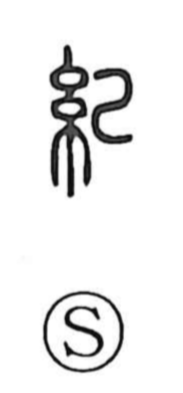

軌

Uncategorized
Kun: | On: ki
track ・ gauge ・ standard ・ model
Explanation
A phono-semantic character: the 車 element evokes a vehicle and its wheels, while 九 serves as the phonetic, pointing to the on reading ki—just as in 宄 and 馗, which share this phonetic. Originally, 軌 denoted the spacing between the two wheels under a carriage—the wheel gauge—which anciently was fixed at six shaku and six sun. From this concrete sense of a set track, the character naturally came to mean a rule, standard, or model, hence its use in words that speak of norms and patterns.